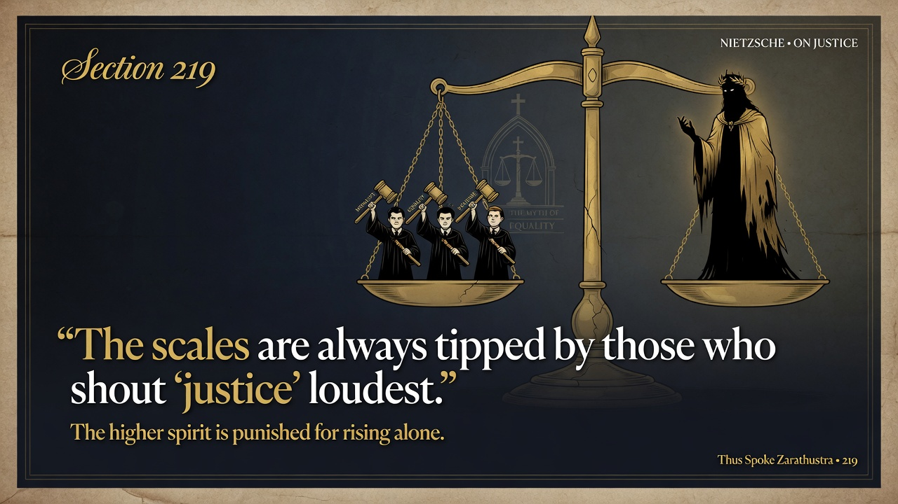
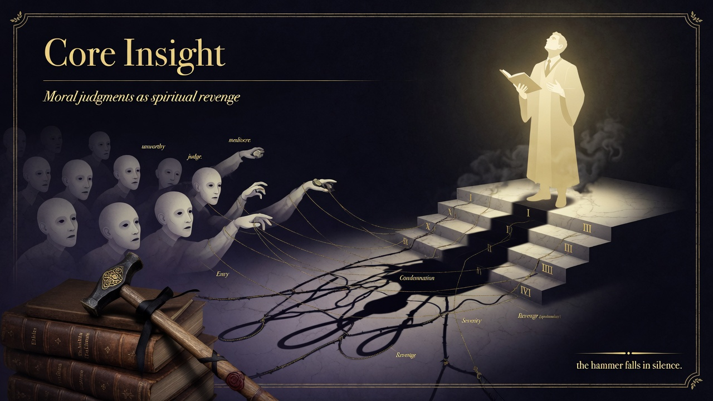

FRIEDRICH NIETZSCHE • 1886 • PART SEVEN
Section 219
Moral Judgment as the Revenge of the Shallow
Identifier: 219
Simple modern summary
Moral condemnation is often how limited people get revenge on those with more depth. Judging others becomes their way to feel sharp and important. Meanness dressed as ethics.
EXTENSIVE SUMMARY (Faithful to Text)
“Moral judgments and condemnations constitute the favorite revenge of the spiritually limited against those less limited—also a sort of compensation for their being badly endowed by nature, and finally an opportunity for acquiring spirit and becoming subtle—malice spiritualizes.”
Nietzsche diagnoses the moralizing impulse itself as a weapon of the intellectually and spiritually shallow. Those poorly endowed with higher gifts take revenge by judging and condemning, using universal moral standards (especially “equality of all before God”) to bring the over-endowed in spirit down to their level. The need for God or absolute morality often stems not from piety but from this requirement for a leveling tribunal. Yet he offers a subtle flattery: lofty spirituality is the final product of precisely those moral qualities—justice, benevolent severity—acquired singly over long discipline and perhaps generations, then spiritualized into the capacity to maintain gradations of rank among things and men.
Key Insight: The practice of moral condemnation frequently masks ressentiment and the drive to equalize rather than genuine ethical insight. True rank-ordering and higher spirit arise from severity, not from the universalism that flattens distinctions. The shallow require the myth of equality to console their limitations; the psychologist sees through it to the order of rank.
BGE connection: In Part Seven’s exploration of “our virtues,” this section deepens the critique of modern moral instincts begun earlier. Following the study of mediocrity’s Jesuitical war on the exception (218), Nietzsche reveals how moral judgment itself functions as the rule’s cunning instrument of leveling. It prepares the pathos of distance and the revaluation that distinguishes noble hardness from slave morality’s softening.
Modern companion insight: In 2026 culture of cancelations, online tribunals, corporate DEI scoring, and social-media moral panics, the revenge of the shallow operates at unprecedented scale and speed. The free spirit learns to distinguish authentic ethical severity and rank from the spiritualized malice that punishes excellence under cover of equality or “safety.” Merit, hierarchy of achievement, and the conditions for rare spirits require protection from the indemnity that the mediocre extract through moral condemnation. Study the mechanism without becoming its victim.
Nietzsche diagnoses the moralizing impulse itself as a weapon of the intellectually and spiritually shallow. Those poorly endowed with higher gifts take revenge by judging and condemning, using universal moral standards (especially “equality of all before God”) to bring the over-endowed in spirit down to their level. The need for God or absolute morality often stems not from piety but from this requirement for a leveling tribunal. Yet he offers a subtle flattery: lofty spirituality is the final product of precisely those moral qualities—justice, benevolent severity—acquired singly over long discipline and perhaps generations, then spiritualized into the capacity to maintain gradations of rank among things and men.
Key Insight: The practice of moral condemnation frequently masks ressentiment and the drive to equalize rather than genuine ethical insight. True rank-ordering and higher spirit arise from severity, not from the universalism that flattens distinctions. The shallow require the myth of equality to console their limitations; the psychologist sees through it to the order of rank.
BGE connection: In Part Seven’s exploration of “our virtues,” this section deepens the critique of modern moral instincts begun earlier. Following the study of mediocrity’s Jesuitical war on the exception (218), Nietzsche reveals how moral judgment itself functions as the rule’s cunning instrument of leveling. It prepares the pathos of distance and the revaluation that distinguishes noble hardness from slave morality’s softening.
Modern companion insight: In 2026 culture of cancelations, online tribunals, corporate DEI scoring, and social-media moral panics, the revenge of the shallow operates at unprecedented scale and speed. The free spirit learns to distinguish authentic ethical severity and rank from the spiritualized malice that punishes excellence under cover of equality or “safety.” Merit, hierarchy of achievement, and the conditions for rare spirits require protection from the indemnity that the mediocre extract through moral condemnation. Study the mechanism without becoming its victim.
Validation: Direct Kaufmann-aligned quote and faithful elaboration of moral judgment as revenge and compensation of the limited; synthesis with rank and spiritualization of justice. ~365 words. Part Seven context preserved.
PRESENTATION SLIDES
Visual Slides
Dark Academia • Minimalist Keynote Style • 3 Slides
1. Title + Key Quote
SLIDE 1/3

Elegant title slide with the aphorism on moral judgment as the favorite revenge of the spiritually limited. Scales of rank and envy in dark academia gold accents.
2. Core Insight
SLIDE 2/3

Moral condemnation as spiritualized malice and compensation for natural limitation. The shallow pull the higher down to enforce equality before their tribunal.
3. Modern Companion
SLIDE 3/3

Cancel culture, equity scoring and online moral mobs as contemporary revenge of the limited upon excellence and rank. The free spirit protects the conditions for higher types.
Self-contained HTML • Tailwind CDN • Part Seven (Our Virtues). Accurate modern companion to Kaufmann translation.